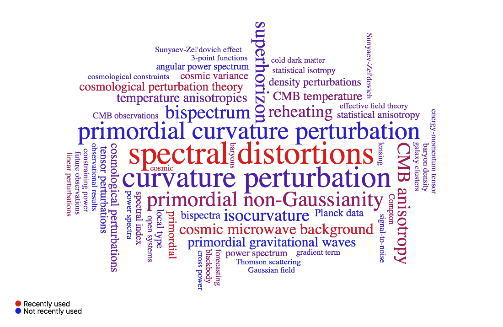

My research interests are in the broad area of theoretical Cosmology from the cosmic microwave background to the early universe.
For observational cosmology, constraining the primordial non-Gaussianity is one of the main topics, with a focus on the nonlinar cosmological perturbations, such as CMB spectral distortions.
For The Early Universe, I am interested in the model independent predictions of the early Universe from the viewpoint of theoretical consistency like symmetries.
Also, I am working on the effective field theory of dissipative fluids in the more general context of quantum field theory and trying to apply it to cosmology or gravitational theory.

Previous research summary
I have been working on theoretical and observational cosmology.
In particular, I studied the nonlinear evolution of the cosmological perturbations to test inflationary cosmology.
For instance, I investigated the distortions to the cosmic microwave background (CMB) blackbody spectrum for a probe of primordial fluctuations on small scales.
My most significant achievements so far have been:
- Estimation of the chemical potential of the CMB generated from the dissipation primordial gravitational waves (PGWs) on small scales.
I found this mechanism for the first time, and I forecasted the upper bounds on the amplitude and the scale dependence of the PGWs based on the detectability of the future space missions [Ota-Takahashi-Tashiro-Yamaguchi 2014].
-
Deriving a new type of third-order spectral distortion in the framework of nonlinear cosmological perturbation theory in the low energy limit of cosmic electrons.
I showed that its ensemble average is sensitive to non-Gaussianity of the primordial density fluctuations and numerically computed it [Ota 2016, Ota-Baltro 2018]
-
Deriving the linear Compton y-parameter of the CMB generated during recombination.
I found the y parameter can resolve the degeneracy between baryon isocurvature perturbations and the CDM ones[Haga-Inomata-Ota-Ravenni 2018].
-
Proposing a test for the statistical isotropy with the Compton y-parameter anisotropy in the CMB.
I showed that 1-point ensemble of the y-parameter is directly related to statistical anisotropy of the primordial perturbations [Ota 2018].
In addition to observational topics, I recently started researches on more theoretical aspects of cosmology.
For example, I am interested in the cosmological applications of the effective field theory of non-equilibrium open systems and have studied
- The effective field theory of time-translational symmetry breaking in open systems [Hogno-Kim-Noumi-Ota 2018].
I constructed the flat spacetime limit of the EFT of inflation in open syten, which can accounts for the horizon scale heavy field environments during inflation.